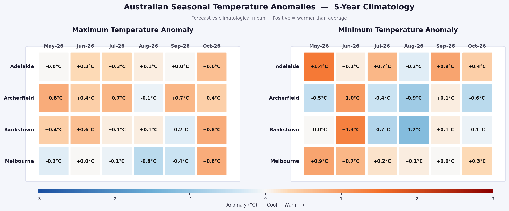
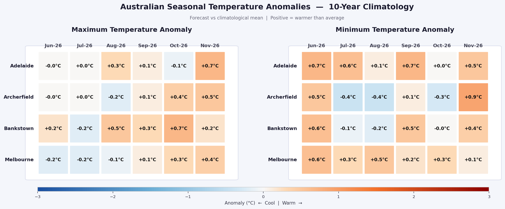
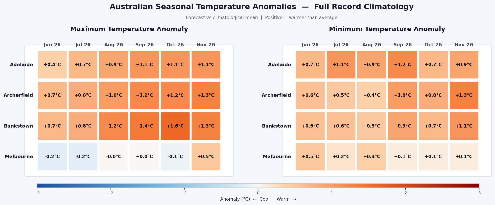

Download Anomaly Tables
5-Year Climatology
SHORT-TERM
{kind=link}
10-Year Climatology
MEDIUM-TERM
{kind=link}
Full Record Climatology
LONG-TERM
{kind=link}
About These Tables
Locations
Adelaide, Archerfield (Brisbane), Bankstown (Sydney) and Melbourne Olympic Park — all Bureau of Meteorology stations.
Forecast Source
Monthly mean max and min temperature forecasts. Initialised on the 6th of each month, covering the following 6 months.
Climatology Baselines
Three baselines: 5-year (recent conditions), 10-year (decadal), and full station record (long-term warming context).
Colour Scale
Blue = cooler than climatology. Orange/red = warmer. Scale runs ±3°C. White = near-average. Click any table to enlarge.
Melbourne Note
Melbourne Olympic Park station only commenced in 2013, so the "full record" baseline is ~12 years, not multi-decadal.
Update Schedule
Tables are regenerated on the 6th of each month following the new forecast initialisation. Check back monthly.
Station Locations
📍 Adelaide (West Terrace) — BOM 023090
📍 Archerfield — BOM 040211
📍 Bankstown — BOM 066137
📍 Melbourne (Olympic Park) — BOM 086338